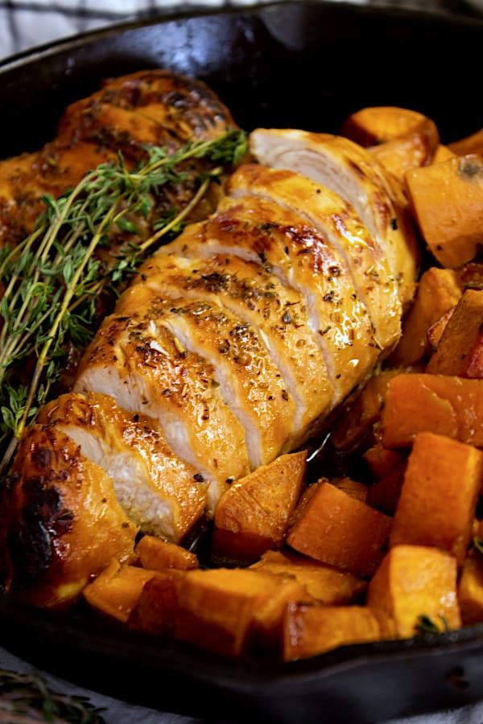

Cajun Chicken and Sweet Potato

A fast and easy lunch favourite.
Ingredients
- 2 chicken breasts
- 1 large sweet potato
- 2 garlic cloves (peeled)
- cajun seasoning
- salt and pepper
- Cover both chicken breasts in cajun seasoning.
- Place a garlic cloved on top of each breast, then airfry for 20 minutes at 180c.
- Peel and cut the sweet potato into chunks, before covering dousing with some oil, salt and pepper.
- Airfry the sweet potato for 15 minutes at 205c.
- Cut the chicken into strips and serve atop the sweet potato.